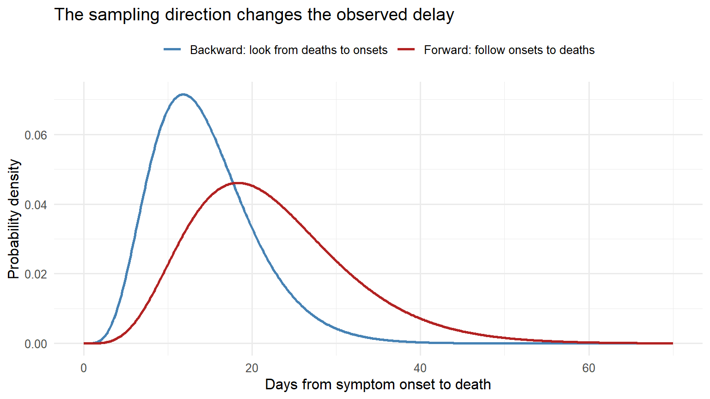
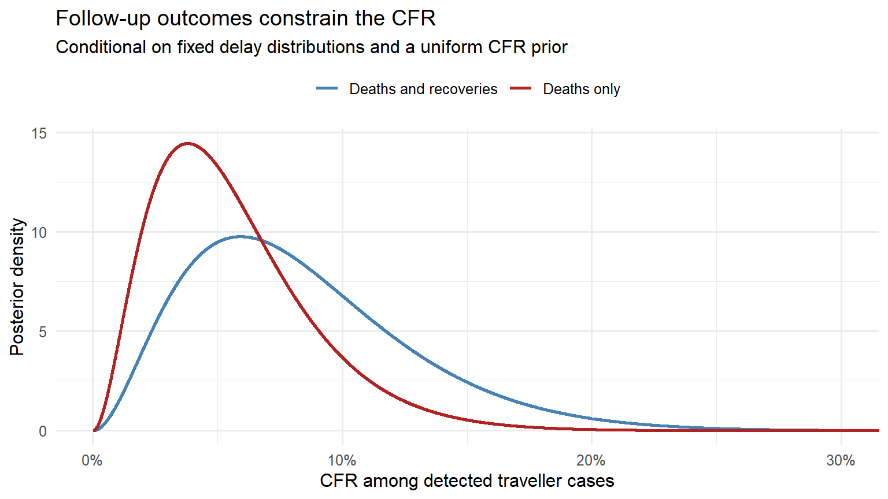

From Reported Deaths to Fatality Risk: Imperial’s Fourth COVID-19 Report
R
COVID-19
epidemiology
case fatality ratio
survival analysis
statistical inference
Reading Imperial’s fourth COVID-19 report: how delayed outcomes and incomplete case detection shaped early fatality estimates, with R reconstructions using the original traveller data.
Author
Jong-Hoon Kim
Published
October 13, 2026
After transmissibility, a question about severity
The previous post examined Imperial College London’s third COVID-19 report: how an inferred outbreak size could inform the reproduction number. The fourth report, published on 10 February 2020, asked how often infection would lead to death. (1,2)
The apparent calculation is simple: divide deaths by cases. The difficulty is deciding which cases belong in the denominator and how many have been followed long enough for their outcomes to be known. These are two different statistical problems, and their corrections can move the estimate in opposite directions. (3)
We will reconstruct the main calculations in R, examine the likelihood for individual follow-up, and distinguish the report’s published estimates from calculations that hold uncertain inputs fixed. The setting throughout is the evidence available in early February 2020.
Same virus, different denominators
Let \(c\) be the probability that a person meeting a specified case definition ultimately dies from the disease. That is a case fatality ratio, or CFR. The infection fatality ratio, or IFR, instead includes every infected person, including people with mild or no symptoms who never become detected cases. A reported CFR therefore needs its case definition attached. (3)
Report 4 used three surveillance groups. Its Table 1 reported the following estimates; the final two rows are what we would normally call IFR estimates, although the report used the phrase CFR for all infections. (2, Table 1)
Population and method
Central estimate
Reported 95% interval
Hubei detected cases, aggregate model
18% (posterior mode)
11–81%, credible
Travellers, parametric model with deaths and recoveries
5.1% (maximum likelihood)
1.1–38%, credible
Travellers, parametric model using deaths only
5.6% (posterior mode)
2.0–85%, credible
Travellers, CASEFAT non-parametric method
1.2%
0.9–26%, confidence
All infections, 14-day PCR detection window
0.9%
0.5–4.0%, confidence
All infections, 7-day PCR detection window
0.8%
0.4–3.0%, confidence
The table preserves the report’s labels for the central estimates and intervals. A credible interval describes posterior uncertainty under a model and prior; a confidence interval belongs to a procedure whose repeated-sampling coverage is assessed under its assumptions. They should not all be relabelled as confidence intervals.
The differences between rows do not by themselves identify geographical differences in biological severity or healthcare quality. Surveillance systems find different parts of the illness spectrum, and the populations they observe can differ in age, exposure and access to care. (3)
Why deaths divided by cases is unfinished arithmetic
Suppose a patient developed symptoms \(a\) days ago. Write \(F_D(a)\) for the probability that a fatal outcome would already have occurred by that age, conditional on the patient eventually dying. Then
\[
\Pr(\text{death observed by age }a)=cF_D(a).
\]
Even if every case and death is detected, this probability is smaller than \(c\) while \(F_D(a)<1\). During a growing epidemic, a large fraction of cases are recent, so many eventual deaths have yet to occur. (4)
Incomplete case detection creates a separate denominator problem. If severe illness is easier to detect than mild infection, detected cases are not a representative sample of all infections. Waiting for their outcomes resolves the follow-up problem but does not make their CFR equal to the IFR. (3)
Three ways the observation window matters
It helps to distinguish the patient follow-up data from a list containing only completed deaths:
Right censoring: a known patient has an unresolved outcome when follow-up ends.
Right truncation: a death-only dataset excludes patients whose fatal intervals have not finished by the collection cutoff.
Dynamical bias: looking backward from deaths during epidemic growth overrepresents short delays, because recent symptom onsets are more numerous.
These distinctions are stated explicitly in later work on epidemiological delays. We use that terminology to explain the earlier report. (5)
The delay distribution and its sampling direction
Let \(f_D(u)\) be the forward density of onset-to-death delays among fatal cases, and let \(O(t)\) be symptom-onset incidence. Among deaths occurring at date \(d\), the density of the elapsed delay is proportional to
The factor \(e^{-ru}\) reduces the relative weight of long delays. If onset recording began only at \(T_{\min}\), the upper integration limit becomes \(d-T_{\min}\) and the density is restricted to that interval. Our illustration below isolates the growth effect and does not impose this additional truncation. (2, Methods A,5)
A gamma distribution makes the correction explicit
For a gamma delay with mean \(m\) and coefficient of variation \(v=\operatorname{SD}/m\),
where \(\alpha\) is the shape and \(\beta\) the rate. Multiplying its density by \(e^{-ru}\) changes the rate to \(\beta+r\). The backward mean therefore becomes
Report 4’s Table 2 gives modes of 22.3 days and 0.42 for the onset-to-death mean and coefficient of variation, and 22.2 days and 0.45 for onset-to-recovery. These are estimates of distribution parameters. An uncertainty interval for \(m\) is not an interval containing a specified proportion of patients’ delays. (2, Table 2)
The forward mean is 22.3 days, while the mean obtained by sampling backward from deaths in this growing epidemic is 14.38 days. A mean calculated from completed deaths cannot be used as a forward delay without considering how those deaths were sampled.
Show code
delay_days <-seq(0, 70, by =0.1)delay_plot <-rbind(data.frame(days = delay_days,density =dgamma(delay_days, death_shape, rate = death_rate),distribution ="Forward: follow onsets to deaths"),data.frame(days = delay_days,density =dgamma(delay_days, death_shape,rate = death_rate + growth_rate),distribution ="Backward: look from deaths to onsets"))ggplot(delay_plot, aes(days, density, colour = distribution)) +geom_line(linewidth =1) +scale_colour_manual(values =c("steelblue", "firebrick"), name =NULL) +labs(x ="Days from symptom onset to death", y ="Probability density",title ="The sampling direction changes the observed delay") +theme(legend.position ="top")

Figure 1: Forward onset-to-death density and its exponentially tilted backward density, using fixed Report 4 parameter modes and growth rate 0.14/day. This illustrates the sampling effect; it is not a posterior fit to the original 26 deaths.
Reconstructing the Hubei calculation
In this calculation, \(C(t)\) is onset incidence among the chosen detected-case stratum, and \(c\) is its CFR. Expected death incidence is the convolution
Thus the death-to-onset incidence ratio estimates \(cz\). The factor \(z\) is the Laplace transform of the delay distribution at growth rate \(r\). Dividing the observed ratio by \(z\) gives a point estimate of \(c\) when the growth rate and delay parameters are held fixed.
First align the reporting clocks
The comparison in Report 4 uses 45 newly reported deaths on 1 February and 3,156 newly reported cases on 5 February, allowing four days’ difference between death and case reporting delays. These are daily counts, not cumulative totals. (2, Methods C)
The correction raises the aligned ratio from 1.43% to 17.15%. This is close to the reported 18%, but it is a fixed-input reconstruction. Substituting marginal parameter modes into a formula does not reproduce the mode of a posterior that integrates over those parameters, or its 11–81% credible interval.
Figure 2: Fixed-input Hubei CFR calculated from 45/3,156, for three assumed mean delays and varying epidemic growth. The coefficient of variation is held at 0.42. These are sensitivity scenarios, not posterior intervals.
For the same observed ratio, faster growth or longer delays generally imply more eventual deaths that have not yet appeared. The plot concerns inference under different assumptions; changing an assumed delay does not itself change the biological fatality risk.
What the traveller follow-up contributes
The original traveller dataset is available in a pinned MIDAS archive. The local follow-up table retains elapsed times, outcome categories and an onset-imputation flag. Its transformation and source checksum are documented in the provenance file.
For 141 cases, onset is imputed as the earliest recorded healthcare contact, report or confirmation date. This follows the report’s approach but substitutes the latest plausible onset for an unknown earlier date. The implied follow-up can therefore be too short. Of the 36 recoveries, 29 have an observed onset date, which helps explain the different recovery counts used for case follow-up and delay estimation.
Death, recovery and an unresolved outcome enter differently
For a patient who remains unresolved at follow-up age \(a\), the likelihood contribution is
\[
L_U(c;a)=c\{1-F_D(a)\}+(1-c)\{1-F_R(a)\}.
\]
The patient may eventually die, with probability \(c\), or recover, with probability \(1-c\). Either possibility must have a delay long enough for the outcome still to be unobserved. A recorded death during the day \([a,a+1)\) contributes
\[
L_D(c;a)=c\{F_D(a+1)-F_D(a)\},
\]
and a recovery contributes
\[
L_R(c;a)=(1-c)\{F_R(a+1)-F_R(a)\}.
\]
The full likelihood multiplies these contributions over patients. This mixture model considers two eventual outcomes; the probabilities above are contributions to that likelihood, rather than hazards conditional on still being unresolved. (4)
For the R demonstration, dates are treated as day bins, and follow-up ends after 8 February. Hence an unresolved case has censoring age followup_days + 1. We fix both gamma distributions at the values above. The event-day factors in braces are then constant in \(c\) and can be dropped when finding the likelihood’s shape in \(c\). They would be needed for joint estimation of the delay parameters.
vapply() evaluates one candidate CFR at a time; numeric(1) checks that each evaluation returns one log-likelihood value. Normalising those likelihood weights implements a Bayesian update with the uniform prior specified in our example.
These intervals are conditional credible intervals from this demonstration. Report 4 integrated over delay uncertainty on a multi-parameter grid. Fixing those delays, choosing an explicit day-bin convention and adding our stated prior will not recover its marginal posterior intervals.
Show code
posterior_plot <-rbind(data.frame(cfr = c_grid, density = posterior_both *length(c_grid),method ="Deaths and recoveries"),data.frame(cfr = c_grid, density = posterior_death *length(c_grid),method ="Deaths only"))ggplot(posterior_plot, aes(cfr, density, colour = method)) +geom_line(linewidth =1) +scale_x_continuous(labels = axis_pct) +scale_colour_manual(values =c("steelblue", "firebrick"), name =NULL) +coord_cartesian(xlim =c(0, 0.3)) +labs(x ="CFR among detected traveller cases", y ="Posterior density",title ="Follow-up outcomes constrain the CFR",subtitle ="Conditional on fixed delay distributions and a uniform CFR prior") +theme(legend.position ="top")

Figure 3: Conditional traveller CFR posterior densities under fixed gamma delay parameters, an inclusive 8 February cutoff and a uniform CFR prior. The original 290-case dataset supplies the outcomes. These curves are new calculations, not Report 4’s marginal posteriors.
The observed fractions are 0.69% for deaths divided by all cases and 5.26% for deaths divided by completed outcomes. The first treats unresolved patients as if none will die. The second selects patients whose outcomes have already occurred; that selection depends on the relative death and recovery delays. Neither fraction supplies the general solution to incomplete follow-up. (4)
Following a fixed case cohort forward
The same delay distribution can turn a candidate CFR into an expected death trajectory. For a fixed cohort with onset dates \(o_i\), the expected cumulative number of deaths by date \(t\) is
where \(F_D(a)=0\) for \(a<0\). This is the discrete-cohort version of the projection rule behind Report 4’s Figure 2. No cases acquired after the cohort cutoff are added. (2, Methods E)
Figure 4: Expected cumulative deaths in the 290-case traveller cohort under candidate CFRs, using observed or imputed onsets and the fixed gamma death-delay distribution. Points show the two deaths recorded by 8 February. This reconstructs the projection rule rather than the exact published Figure 2.
These are expected counts conditional on the cohort’s onset dates and the candidate CFR, evaluated at the end of each plotted day. They do not show a prediction interval or condition on each patient’s already observed recovery or survival history. Forecasting the remaining deaths among unresolved patients would require that additional conditioning. The full 290-case cohort and explicit day-bin convention also make this a reconstruction of the method rather than an exact reproduction of the published graph.
Repatriation flights supply a different denominator
To estimate infection prevalence, Report 4 pooled four flights with ten positive passengers. The tabulated passenger counts sum to 740, including an assumed 200 for one flight; the text rounds this total to approximately 750. (2, Table 3)
The exact binomial interval describes sampling uncertainty under an exchangeable passenger-testing model. It does not account for the assumed passenger count, imperfect PCR sensitivity or differences between repatriated residents and Wuhan’s population.
Prevalence is a stock; incidence is a flow
A positive PCR result captures infections across several onset dates. For the denominator expansion, \(C(t)\) now represents underlying incidence on the onset-time scale, rather than the detected-case stratum used above. Let \(w\) be the detectable window in days, starting \(l\) days before onset; let \(N\) be population size and \(y(t)\) detectable prevalence. The window model gives
The integral has units of days, so the factor \(1/r\) is necessary. As \(r\to0\), the expression becomes the familiar relation \(y(t)\approx wC(t)/N\). Faster growth changes the effective length of the window because older onset cohorts were smaller. Applying this onset-based window to asymptomatic infections also requires a notional onset clock; an infection-time model would avoid that particular approximation.
The shifted calculation gives roughly 24,000 and 33,000 daily onsets, close to the report’s arithmetic. Under the literal window definition, those are values of \(C(t+1)\); \(C(t)\) is one day’s growth smaller. The tabulated factor is therefore a report-style arithmetic reconstruction, rather than a demonstrated estimate from fully aligned populations and dates. The distinction matters when comparing with case reports after an assumed reporting delay.
Dividing 18% by the shifted scaling factor yields 0.92% for 14 days and 0.67% for seven days. The latter differs from the published 0.8%. We retain that difference: the report does not specify enough numerical detail to reproduce every reported summary by dividing rounded central estimates.
What the scaling assumes about deaths
Let \(U=I/C_{\mathrm{detected}}\) be the ratio of all infections to detected cases, and \(a_D\) the fraction of fatal infections whose deaths are recorded. Write \(R_{\mathrm{rep}}\) for the delay-adjusted recorded-death/reported-case ratio. Once the time periods and populations align,
When fatal infections are detected and included in the case series, complete death reporting makes \(R_{\mathrm{rep}}\) equal to the detected-case CFR. The simple division by \(U\) assumes this condition and \(a_D=1\). It also transfers an ascertainment estimate from Wuhan to the Hubei CFR calculation. Different death reporting, test sensitivity, population composition or timing would change the relationship. These assumptions enter the interpretation of the estimate, beyond the passenger sample’s binomial uncertainty.
What can be reproduced from the report?
The aggregate calculation, flight totals and traveller follow-up provide useful checks on the order of magnitude and the mechanisms of inference. Reproducing all published intervals requires the joint delay posterior, its prior bounds and the numerical grid. The report does not fully specify those ingredients.
There are also details that need care when implementing its printed equations:
The backward-delay weighting must be \(e^{-ru}\), as follows from \(O(d-u)\) and the stated gamma mean transformation; an intermediate display prints the opposite sign.
The aggregate likelihood is described as binomial, while its printed posterior kernel has Poisson form.
The evaluated prevalence integral needs \(1/r\), and its numerical incidence appears to use the one-day-shifted quantity shown above.
These are reasons to derive the expressions and state implementation choices. They do not justify choosing parameters solely to force a match to the published numbers.
What later evidence added
Verity and colleagues’ expanded analysis, published online on 30 March 2020, estimated a mean onset-to-death interval of 17.8 days and an overall IFR for China of 0.66% (95% credible interval 0.39–1.33%). It incorporated substantially more information and age-specific analysis. Those are later estimates, rather than inputs available to the 10 February report. (6)
The associated code repository reproduces that later journal analysis. Its availability does not establish that it implements Report 4’s earlier numerical grid.
Reading the severity estimate carefully
Report 3 inferred transmission from the outbreak size. Report 4 inferred eventual clinical outcomes from incomplete follow-up, then used infection screening to enlarge the denominator. In both cases, the observation process connects the model to the quantity we want to estimate.
A severity estimate needs a population, a case definition, a follow-up window and assumptions about detection. The calculations here show why both the delay distribution and the ascertainment mechanism belong alongside the reported percentage. More complete follow-up and representative infection surveys resolve different parts of that uncertainty.
References
1.
Imai N, Cori A, Dorigatti I, Baguelin M, Donnelly CA, Riley S, et al. Report 3: Transmissibility of 2019-nCoV [Internet]. Imperial College London; 2020. Available from: https://doi.org/10.25561/77148 doi:10.25561/77148
Lipsitch M, Donnelly CA, Fraser C, Blake IM, Cori A, Dorigatti I, et al. Potential biases in estimating absolute and relative case-fatality risks during outbreaks. PLOS Neglected Tropical Diseases. 2015;9(7):e0003846. doi:10.1371/journal.pntd.0003846
4.
Ghani AC, Donnelly CA, Cox DR, Griffin JT, Fraser C, et al. Methods for estimating the case fatality ratio for a novel, emerging infectious disease. American Journal of Epidemiology. 2005;162(5):479–86. doi:10.1093/aje/kwi230
5.
Charniga K, Park SW, Akhmetzhanov AR, Cori A, Dushoff J, Funk S, et al. Best practices for estimating and reporting epidemiological delay distributions of infectious diseases. PLOS Computational Biology. 2024;20(10):e1012520. doi:10.1371/journal.pcbi.1012520
6.
Verity R, Okell LC, Dorigatti I, Winskill P, Whittaker C, Imai N, et al. Estimates of the severity of coronavirus disease 2019: A model-based analysis. The Lancet Infectious Diseases. 2020;20(6):669–77. doi:10.1016/S1473-3099(20)30243-7